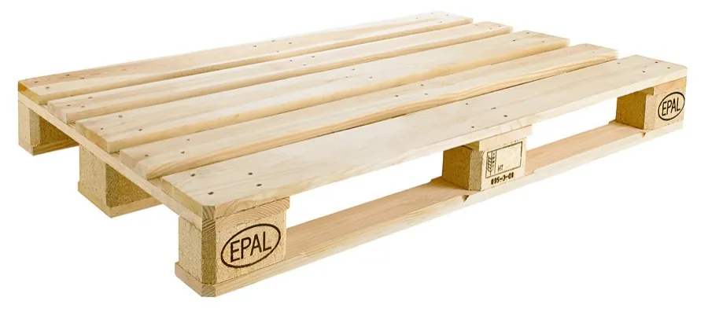

Palette bois EUR / EPAL
Bois Tunisie fabrique des palettes bois au format européen EUR/EPAL, calibrées pour s'intégrer aux chaînes logistiques et simplifier l'emballage de vos expéditions à l'export.
Des formats européens normalisés
Nous fabriquons les deux formats européens les plus courants : la palette 120×80 cm et la palette 120×100 cm. Ces dimensions normalisées sont largement adoptées dans l'industrie et la distribution, ce qui facilite le stockage, le gerbage et la compatibilité avec les équipements de manutention (transpalettes, chariots, rayonnages). Nos palettes partent d'un bois sélectionné, puis sont inspectées et triées avant livraison.

Compatibilité logistique et export
Le format EUR/EPAL est taillé pour les flux logistiques européens : il simplifie l'échange, le transport et la mutualisation des palettes entre partenaires. C'est aussi un choix pratique pour l'export, puisqu'il correspond aux standards attendus par de nombreux destinataires. Pour les expéditions soumises aux exigences phytosanitaires, nous fournissons des palettes bois traitées ISPM 15 (HT). Réponse à votre demande de devis sous 2 heures ouvrables.
Questions fréquentes
EUR et EPAL, est-ce le même format ?
« EUR » et « EPAL » renvoient au même format de palette européenne normalisé (notamment 120×80). Les marquages EUR et EPAL relèvent d'organismes qui gèrent la licence et le poinçon ; Bois Tunisie fabrique des palettes bois au format EUR/EPAL pensées pour la logistique.
Quelles dimensions sont disponibles ?
Nous fabriquons les formats européens 120×80 cm et 120×100 cm, les plus répandus en Europe pour la manutention et le transport. Indiquez-nous le format et vos contraintes de charge pour un devis ajusté.
Ces palettes conviennent-elles à l'export ?
Oui, le format EUR/EPAL s'intègre aux chaînes logistiques européennes, ce qui en fait un choix pratique pour l'export. Pour les expéditions hors UE soumises aux exigences phytosanitaires, demandez-nous des palettes bois traitées ISPM 15 (HT).